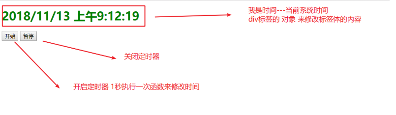
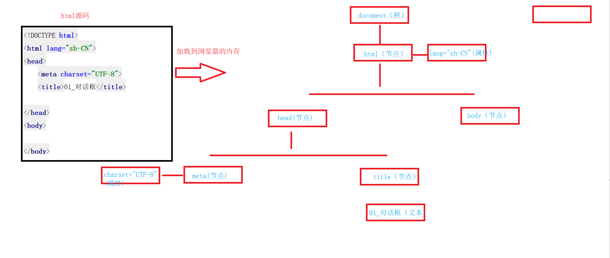
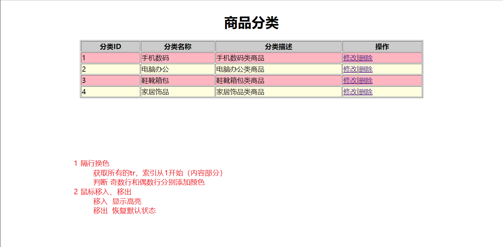

JavaScript高级
一 BOM对象
1.1 概述
浏览器对象模型（Browser Object Model），我们把浏览器抽取成对象模型，可以模拟一些浏览器的功能
history==历史记录 window ==窗口（弹窗/定时器） location==地址栏 BOM==浏览器
window对象
对话框
alert(); ---》 console.log(); 在浏览器控制台输出信息
confirm(); 确定 true 取消 false
prompt('消息内容','默认值'); 确定 输入的内容 取消 null定时器
// 复用性定时器
var number = setInterval('函数名()',间隔时间);
clearInterval(number);
// 一次性定时器
var number = setTimeout('函数名()',间隔时间);
clearTimeout(number);修改标签体内容
// 修改超文本
dom元素.innerHtml=''; += 追加
// 修改文本
dom元素.innerText=''; += 追加location对象
// 当前URL地址信息
location.href;
// 刷新当前页面
location.reload();history对象
// 前进
history.go(1);
// 后退
history.go(-1);
// 刷新当前页面
history.go(0);1.2 window对象
模拟浏览器窗口
a）对话框
<script>
/*
* 对话框
* 1）警告框：window.alert('消息内容');
* 2）确认框：window.confirm('消息内容'); 确定返回true，取消返回false
* 3）输入框：window.prompt('消息内容','默认值'); 确定返回输入的值，取消返回null
*
* */
// window.alert('警告框');
// console.log(window.confirm('班主任美不美？'));
console.log(window.prompt('5+4=?','请输入正确的结果...'));
</script>b）定时器
<script>
/*
* 定时器
* 1）复用性定时器（轮播图）
* 格式：
* var number = window.setInterval('函数名()',间隔时间); 定时器根据指定的间隔时间，执行函数，无限循环，返回定时器编号
* var number = window.setInterval(函数名,间隔时间); 定时器根据指定的间隔时间，执行函数，无限循环，返回定时器编号
* clearInterval(定时器编号);
*
* 2）一次性定时器（广告弹框）
* 格式：
* var number = window.setTimeout('函数名()',间隔时间); 定期是根据制定的间隔时间，执行函数，仅执行一次，返回定时器编号
* var number = window.setTimeout(函数名,间隔时间); 定期是根据制定的间隔时间，执行函数，仅执行一次，返回定时器编号
* clearTimeout(定时器编号);
*
*
*
* window 是浏览器的默认对象，它在调用方法或属性时，可以省略不写
* */
function sing() {
alert('燃烧我的卡路里');
}
// var interval = setInterval('sing()', 2000);
// 绑定单击事件
document.getElementById('myBtn1').onclick = function () {
clearInterval(interval);
}
function dance() {
alert('尬舞.....');
}
var timeout = setTimeout('dance()',2000);
// 绑定单击事件
document.getElementById('myBtn2').onclick=function () {
clearTimeout(timeout);
}
</script>c）案例：会动的时钟!

技术分析**
<script>
// 获取div的 dom对象
var myDiv = document.getElementById('myDiv');
// 点击按钮修改div的内容
document.getElementById('myBtn').onclick = function () {
// 方式一 修改标签体内的超文本
// myDiv.innerHTML = '<h3>我被修改了</h3>';
// 方式二 修改标签体内的文本
myDiv.innerText +='<h3>我被修改了</h3>';
}
</script>1.3 location对象
模拟浏览器窗口的地址栏
a）属性和方法
<script>
/*
* location对象
* 1）地址栏的信息：location.href
*
* 2）页面刷新 : location.reload();
*
* */
// 获取当前的url地址
console.log(location.href);
// 跳转到新页面 绝对路径
// location.href='https://www.baidu.com';
// 点击按钮，刷新页面
document.getElementById('myBtn').onclick = function () {
location.reload();
}
</script>
b）案例：页面倒计时跳转
课下思考题，必须完成
1.4 history对象
模拟浏览器窗口的历史记录
<body>
<a href="./06_history后退.html">演示历史记录</a>
<button onclick="history.go(1);">前进</button>
<button onclick="history.go(0);">刷新</button>
</body>
<script>
/*
* 历史记录
* 1）前进：history.forward();
* 2）后退：history.back()
*
* 3）前进：hisotry.go(1);
* 4）后退：hisotry.go(-1);
* 5）刷新：history.go(0);
*
* */
</script>
二 DOM对象
2.1 概述
文档对象模型（Document Object Model）
html标签通过浏览器加载到内存会生成一颗DOM树，我们可以通过js代码获取这颗树的任意一个节点（标签、元素、节点），可以修改节点的属性或文本
// 获取一个节点
document.getElementById('id属性的值');
// 获取一组节点
document.getElementsByTagName('html标签');
document.getElementsByName("name属性的值");
document.getElementsByClassName('class属性的值');
a）案例：查找节点
b）案例：全选、反选
c）案例：省市联动
2.3 js修改css样式
// 通过js直接修改样式 （不建议，耦合性，繁琐）
dom元素.style.样式名='样式值';
注意：
css中：font-size
js中：fontSize （小驼峰式命名）
// js结合类选择器修改样式 （解耦，简洁）
dom元素.className="类选择器";
a）案例：动态修改样式
b）案例：表格隔行换色
三 表单校验（重点）
3.1 正则表达式
Regular Expression
作用：按照正确的规则去匹配字符串
在js中使用正则表达式
// 创建正则对象
var reg = new RegExp('正则表达式字符串','匹配模式'); i = ignore 忽略大小写
// 直接使用正则表达式
var reg = /正则表达式/匹配模式;
<script>
// 定义字符串
var str = 'ABCnba5212342';
// 方式一
var regExp = new RegExp('abc', 'i');
// 进行校验 正确返回 true 错误返回false
console.log(regExp.test(str));
// 方式二 （推荐）
var regExp2 = /abc/i;
console.log(regExp2.test(str));
/*
* 在企业开发中，我们不会编写正则表达式，但是需要大家能看懂一些 常用
*
* 例如 邮箱
* 个人邮箱： peng.peng-ge_123 @ 163 . com
* cn
* com.cn
* 正则表达式 /^ ( [a-z0-9_\.-] +) @ ([\da-z\.-]+) \. ([a-z\.]{2,6}) $/
*
* // 正则表达式规则
* ^ 以什么什么开始
* $ 以什么什么结束
* () 代表一组
* \ 转义符
* . 代表一个字符 类似于sql _
* [] 代表范围
* a-z
* 0-9
* _
* + 代表一个或多个
* ？代表0个或1个
* * 代表0次或多次
* \d 代表 0-9
* {2,6} 量词 至少2次最多6次
*
*
* */
</script>
var reg = /^[a-zA-Z0-9_]$/;
注意：\w \d + * ? {n,m} //用户注册-实现表单校验